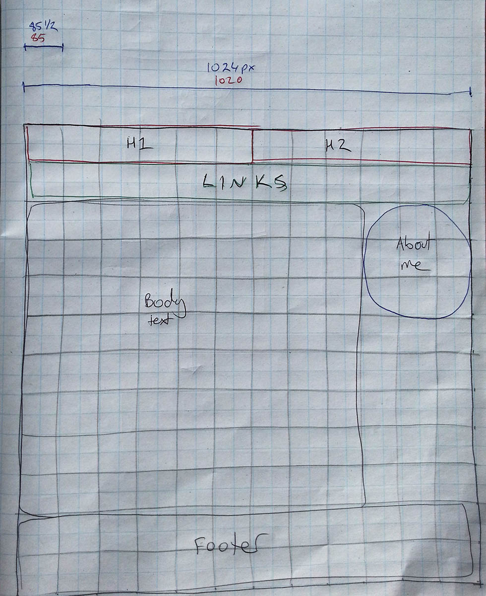
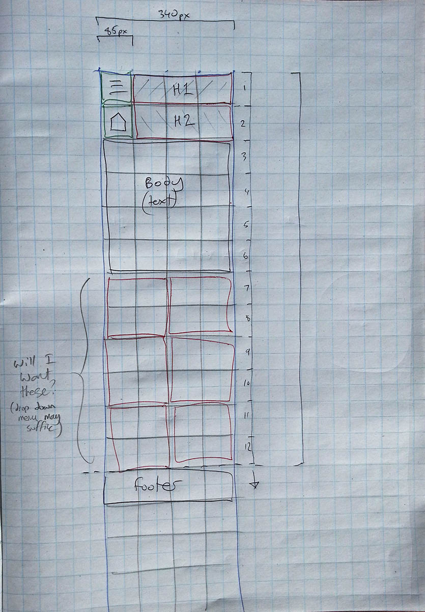
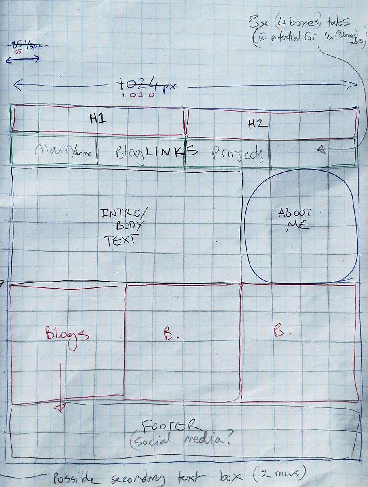
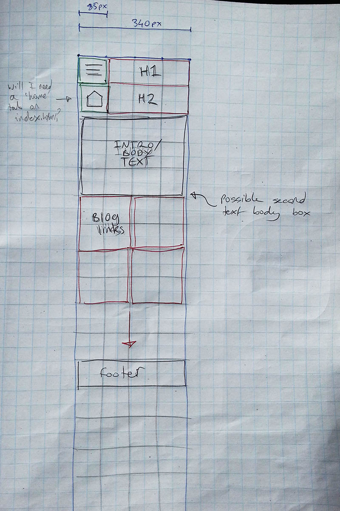

Rob's Blog
EDA 2018
T3 Design to Web
Sprint 3
09/05/2018
What is a responsive site, and why is responsiveness important?
A responsive site is a webpage that will adjust its styles and layout across different screen resolutions and browser types, including changing browser window size.
This means a wepsite can look its best no matter how we are viewing it on whatever device.
What is mobile first design, and why is it important?
'Mobile first design' is the design process of creating your layout with mobile devices in mind first and building into designs for larger screen types.
Make it look good on a mobile, then make it scale to include more content. This is importnant because if you design for large screens first you will have to cut a lot of content out as you scale down or run the risk of your content being sized inappropriately for small devices.
What are frameworks, what are their pros and cons?
A 'framework' is a particular pattern of coding. In our web dev context we have CSS frameworks such as Bootstrap and Get Skeleton. These are dev tools that offer us a predesigned framework for building a responsive webpage on.
The pros of using a framework are convienence and consistency, it allows us to create a site that meets the current demands for responsive webpages without us needing to redesign the wheel.
The cons of using frameworks are that we run the risk of over-standardising and can limit creativity.
What is a wireframe and why would we use it?
A 'wireframe' is a simpe mock-up of the website we are to build, typically you would create one at the beginning of a project as a map/reference of what you wil build.
It can be made to incorporate boxifying design and works very effectively with our CSS frameworks.
They are very useful visual tools when building a responsive site as we can create wireframes of the same site for different scales, mobile-desktop+, and see how the content will juggle before we start building.
Below are some wireframe mock-ups I made for this website.




I found it pretty easy to box up the page using the wireframe.
I have tweaked the look on the mobile end and the full desktop screen end but I have a lot of work to do tweaking for different resolutions inbetween.
I haven't quite got the 'blog boxes' at the bottom of the pages working right, certainly not styles right. Visually they do what they want but I've had to split them into different rows to do so, I'm sure I can contain them all in one element but I havn't quite figured how to simplify the code to do this.
About Me

Robbie